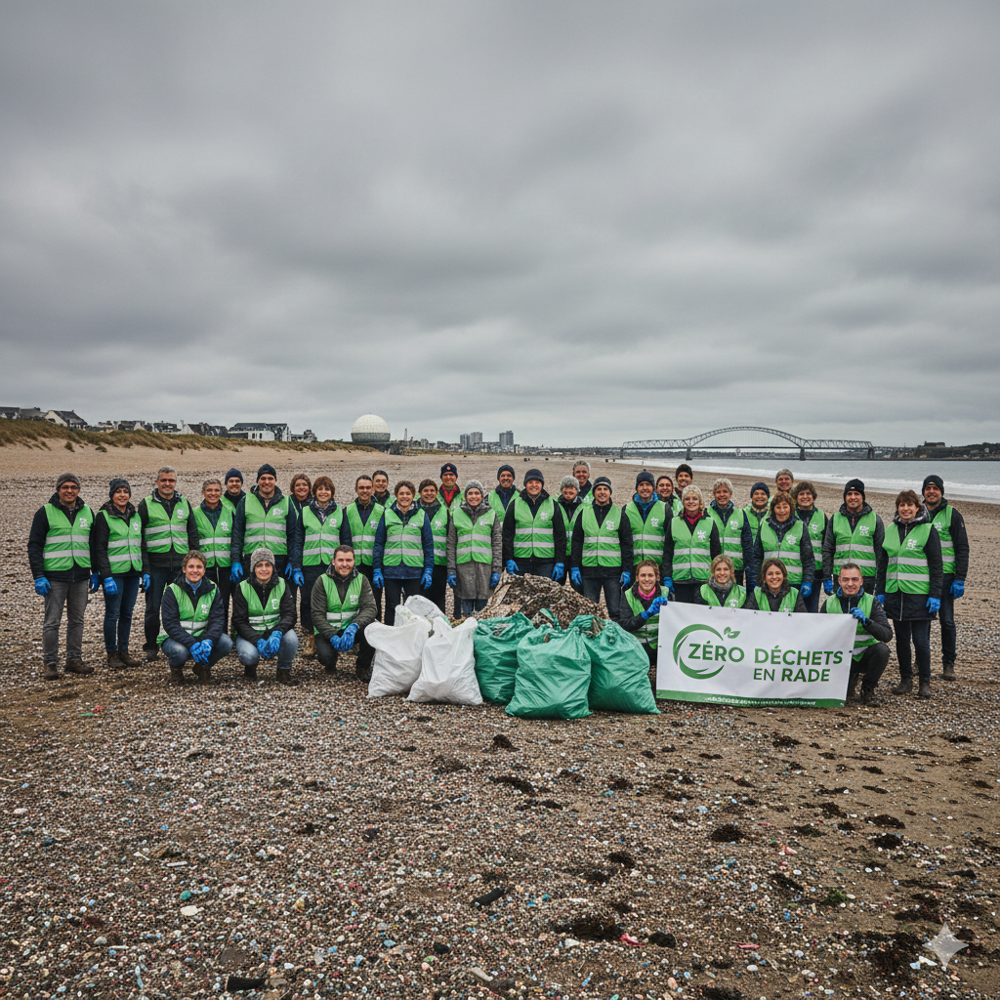
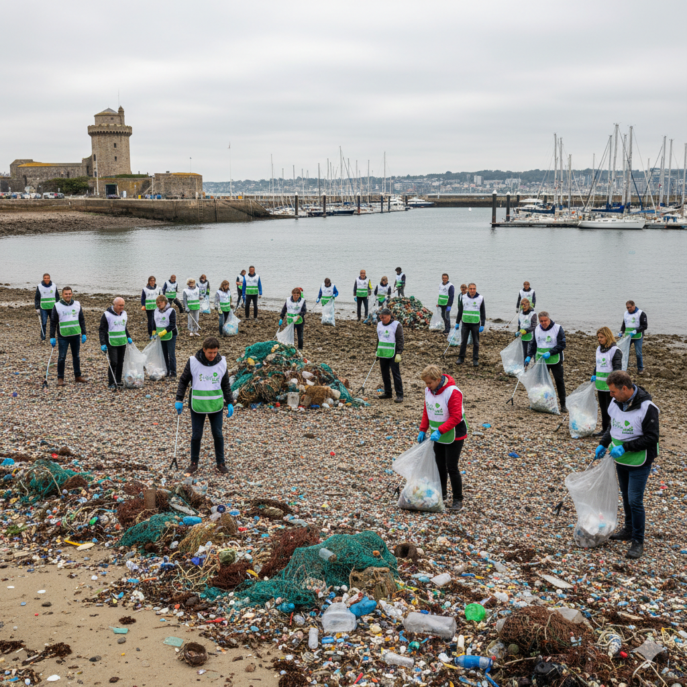
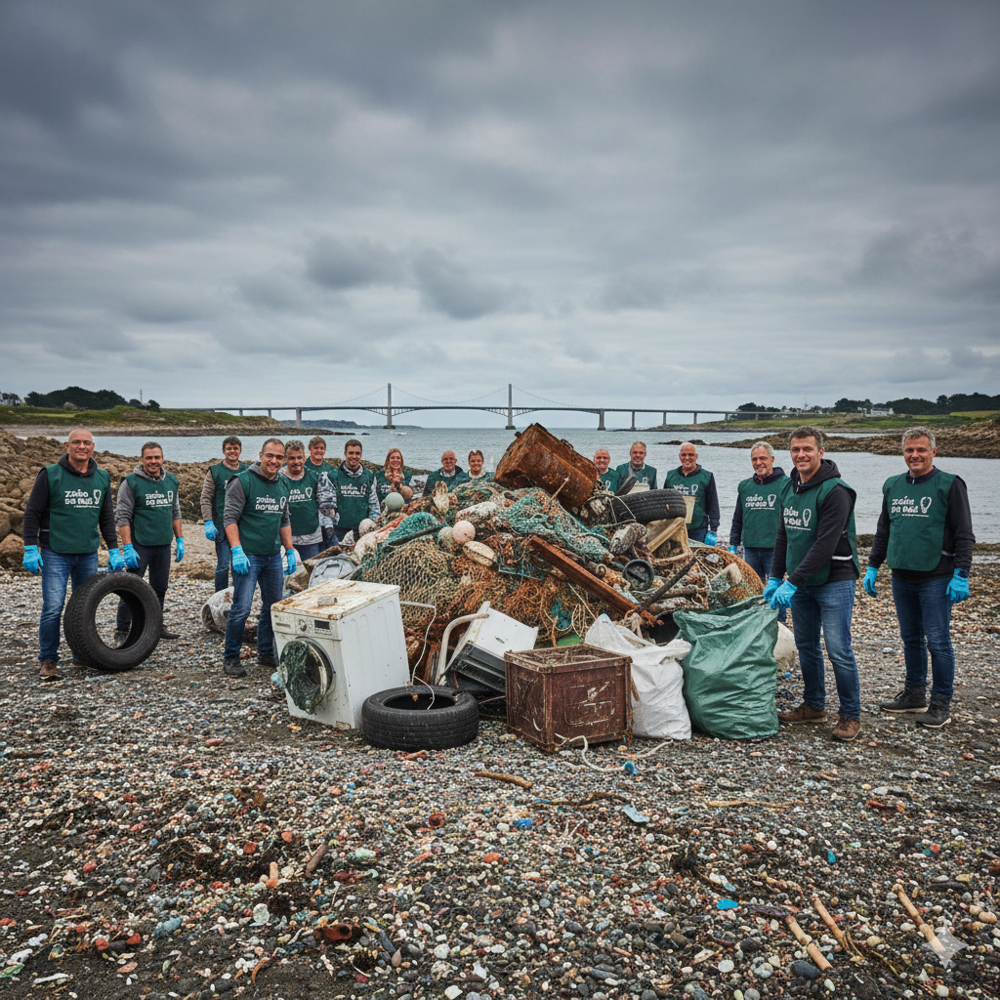
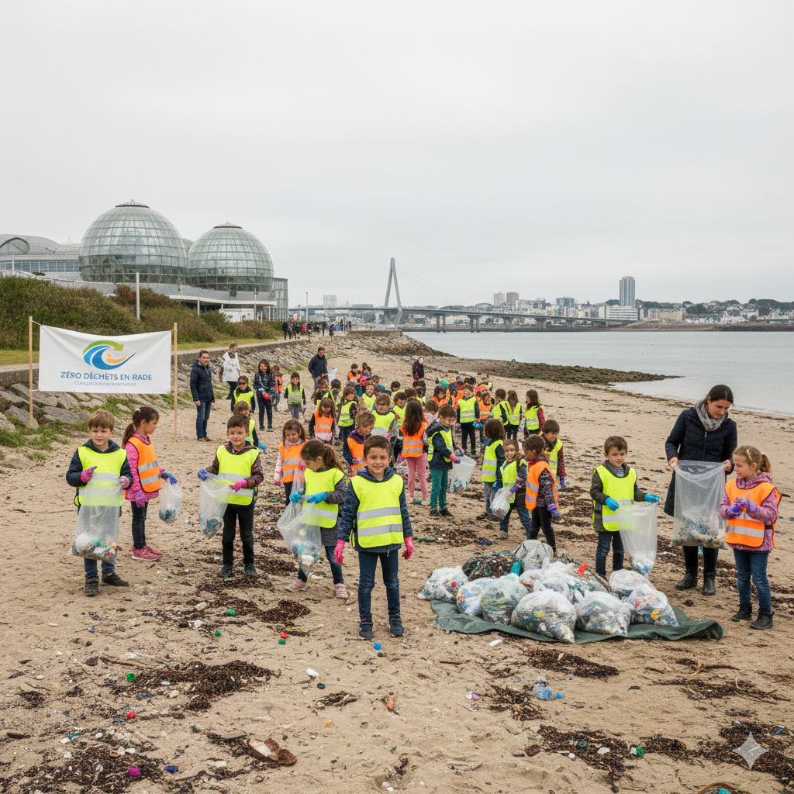

Rejoignez la communauté citoyenne qui agit pour un littoral propre et préservé, de Brest à Plougastel-Daoulas.
450 kg de déchets ramassés
Une mobilisation record à la Plage du Moulin Blanc malgré le froid ! Merci aux 40 bénévoles présents.

210 kg de déchets ramassés
Nettoyage ciblé sur les micro-plastiques au port de plaisance de Brest.

1,2 Tonne de déchets ramassés
Action majeure à Plougastel-Daoulas. Beaucoup d'encombrants récupérés dans les anses.

180 kg de déchets ramassés
Sensibilisation et ramassage avec les écoles locales près d'Océanopolis.
